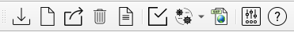
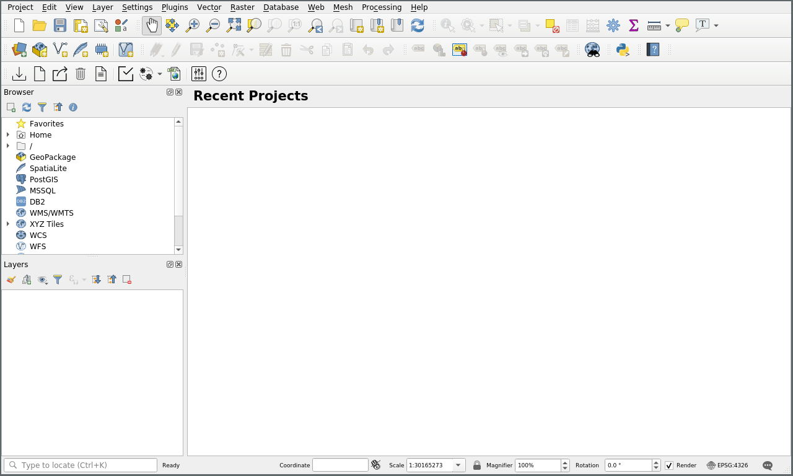
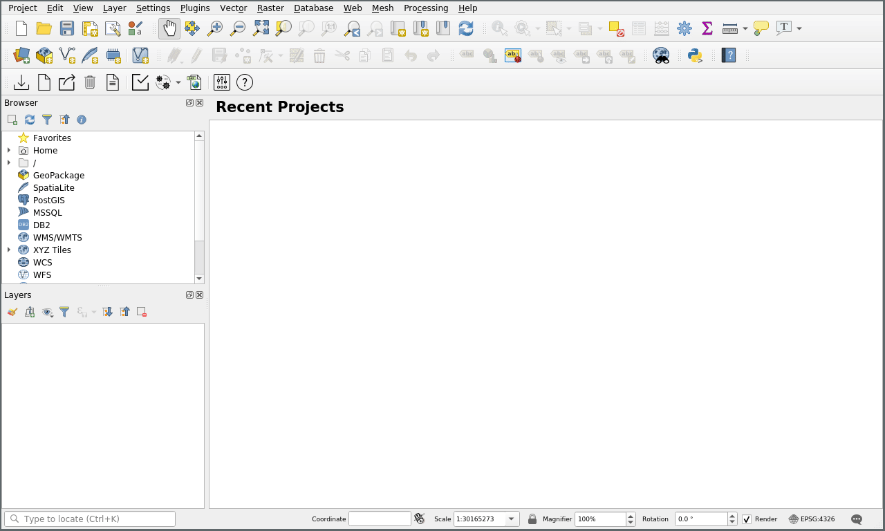
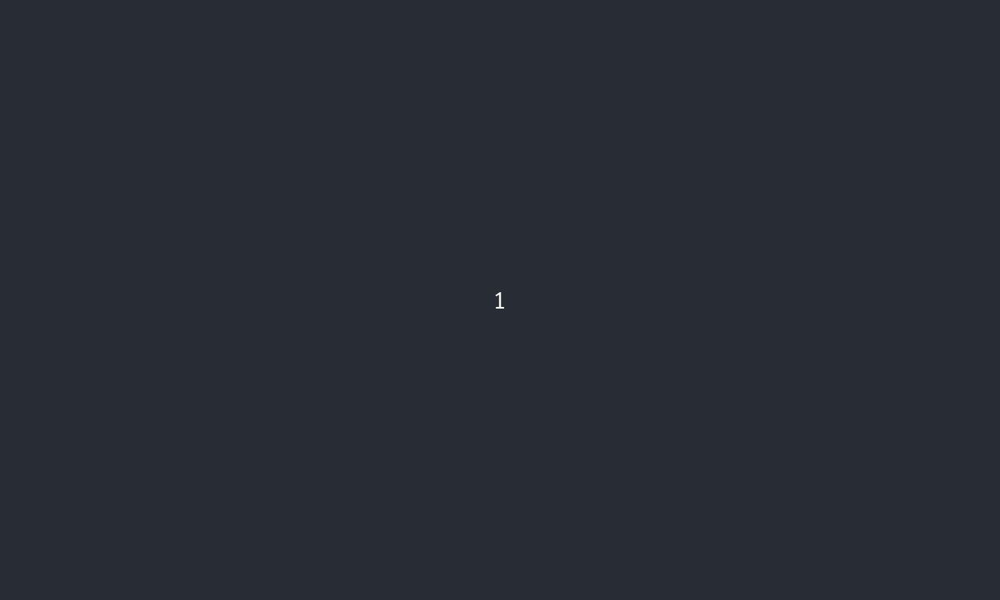
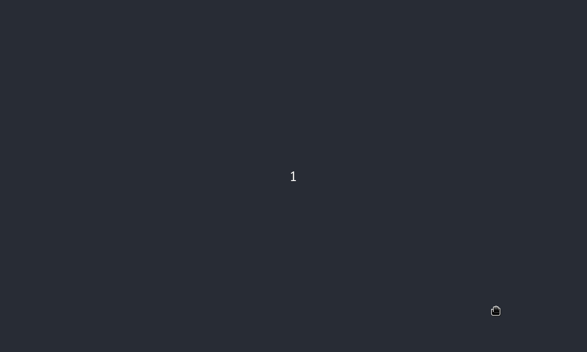
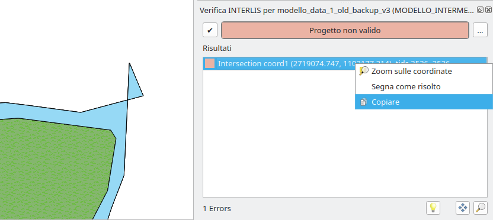
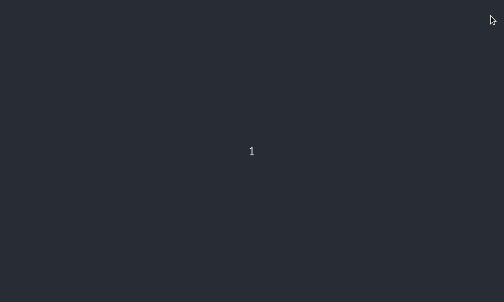
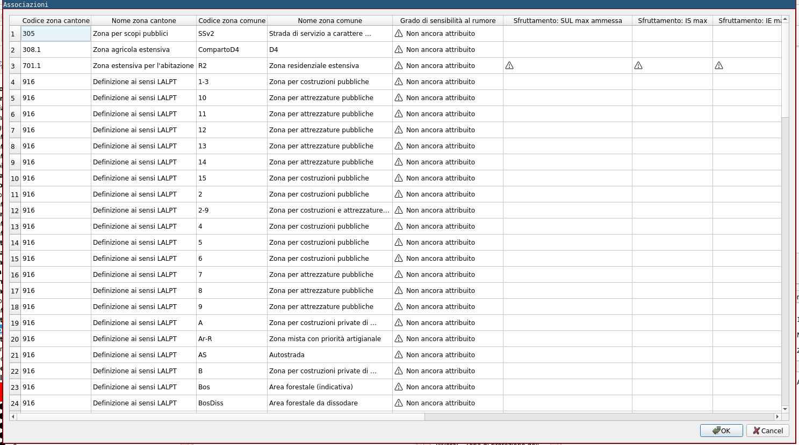

Toolbar
Se il plugin è correttamente installato, apparirà in QGIS la toolbar di Veriti.

I pulsanti sono, da sinistra a destra:
- Importa INTERLIS
- Crea progetto vuoto
- Esporta INTERLIS
- Elimina progetto dal db
- Crea progetto da database
- Verifica vincoli
- Verifica INTERLIS
- Menu con i seguenti pulsanti
- Configura associazioni zone (scelta di default)
- Configura associazioni elementi
- Riscrivi tutte le associazioni
- Configura attributi zone
- Configura attributi elementi
- Importa geometrie da Shapefile
- Impostazioni
- Aiuto
Importa INTERLIS

Pulsante importazione INTERLIS
Tramite questo pulsante, è possibile aprire il dialogo che permette di salvare nella banca dati i dati contenuti in un file INTERLIS .itf (proveniente ad esempio dal portale cantonale).
Nel dialogo è necessario selezionare il file contenente i dati e il nome del progetto Veriti nella banca dati (tecnicamente si tratta del nome dello schema). Il nome deve essere minuscolo, iniziare con una lettera e non deve contenerea spazi e caratteri speciali (ad eccezione del carattere "_").

Crea progetto vuoto
Pulsante creazione progetto vuoto
Tramite questo pulsante, è possibile creare un progetto Veriti vuoto nella banca dati. Viene creata nella banca dati, la struttura delle tabelle secondo il modello cantonale, che permette di registrare in seguito i dati del piano regolatore.

Esporta INTERLIS
Pulsante esportazione INTERLIS Tramite questo pulsante è possibile esportare i dati della banca dati in un file INTERLIS (.itf) da poter salvare o trasferire (ad esempio sul portale cantonale).
Nel dialogo è necessario selezionare il progetto Veriti (schema nella banca dati) che contiene i dati e un file dove salvarli.
Elimina progetto dal database
Pulsante eliminazione progetto dal database
Questo pulsante permette di eliminare un progetto Veriti dalla banca
dati. Nel dialogo va selezionato tra i progetti presenti, quello da
eliminare. Questa operazione corrisponde a cancellare
(DROP CASCADE) uno schema nella banca dati.

Crea progetto da database
Pulsante creazione progetto QGIS da database
Questo pulsante serve per generare un progetto QGIS contenente tutti i layer previsti dal modello cantonale (vedi capitolo Struttura dei dati) collegati con i dati presenti nella banca dati. Il progetto QGIS può venir personalizzato (senza rinominare o cancellare i layer creati da Veriti) ed utilizzato in futuro senza dover per forza rigenerare il progetto tramite questa funzione. Veriti capisce se il progetto attualmente aperto in QGIS è un progetto Veriti e tutti gli strumenti funzionano automaticamente senza bisogno di altre operazioni.

Verifica vincoli
Pulsante per apertura dialogo verifica vincoli
Questo pulsante apre la finestra di dialogo per la verifica dei vincoli (vedi capitolo Vincoli di integrità tra i dati). Dal dialogo è possibile verificare manualmente un vincolo alla volta oppure tutti assieme. Eseguendo i vincoli singolarmente, in caso di risultato negativo, a dipendenza del vincolo verrà indicato il numero di elementi sbagliati, verranno selezionati gli elementi nei layer in questione o verrà creato un layer temporaneo con gli errori (ad esempio nel caso dei buchi tra geometrie).

Verifica INTERLIS
Pulsante per apertura dialogo verifica INTERLIS
Questo pulsante apre la finestra di dialogo per la validazione INTERLIS. Dal dialogo è possibile avviare una validazione INTERLIS per verificare che i dati del progetto siano conformi al modello, allo stesso modo in cui viene fatta dal portale cantonale. Eventuali errori vengono mostrati in una lista. In caso di errori relativi un oggetto geometrico è possibile evidenziarlo o zoommare alle relative coordinate tramite menu tasto destro oppure tramite i bottoni in basso. La validazione puo essere eseguita in qualsiasi momento.

Menu funzioni speciali di associazione
Il pulsante delle funzioni speciali di associazione, si tratta di un menu con cinque diverse funzionalità.
Configura associazioni zone (scelta di default)

Pulsante per apertura tabella di associazione zone
Questo pulsante apre la tabella di associazione delle zone comunali a un piano grafico. Permette di definire per ogni zona, con quale simbolo le geometrie appartenenti a quella zona, verranno mostrate sui differenti piani grafici presenti. È possibile anche rimuovere le associazioni, semplicemente cancellando il simbolo in questione. Per la scelta del simbolo, è possibile inserire direttamente il codice del simbolo nella tabella oppure selezionarlo tramite il dialogo di selezione dei simboli di QGIS. Nel dialogo vanno unicamente selezionati i simboli dall'elenco mostrato. Nella banca dati viene registrato il codice del simbolo. Ogni modifica al simbolo fatta in questo dialogo, non viene registrata.

Configura associazioni elementi
Pulsante per apertura tabella di associazione elementi
Questo pulsante apre la tabella di associazione degli elementi comunali a un piano grafico.
Il funzionamento corrisponde a quello della tabella per le zone comunali
Riscrivi tutte le associazioni
Pulsante per riscrivere tutte le associazioni
Questo pulsante serve per riscrivere nella banca dati (in particolare nelle tabelle che associano le geometrie con i piani grafici) tutte le relazioni.
Quando viene copiata una geometria, quest'ultima, non avrà un record nella tabella che associa le geometrie con i piani grafici. Premendo questo pulsante, vengono create le associazioni per tutte le geometrie e quindi anche quella copiata verrà associata come le altre con la stessa definizione comunale.
Configura attributi zone

Pulsante per apertura tabella di configurazione attributi zone
Questo pulsante apre la tabella per la configurazione degli attributi delle zone comunali. Per ogni zona, viene visualizzata una colonna per ogni attributo definito dalla zona cantonale e viene indicato se l'attributo è obbligatorio o meno tramite il simbolo di attenzione nella cella della tabella.

Configura attributi elementi
Pulsante per apertura tabella di configurazione attributi elementi
Questo pulsante apre la tabella per la configurazione degli attributi degli elementi comunali.
Il funzionamento corrisponde a quello della tabella per le zone comunali
Importa geometrie da Shapefile
Pulsante importazione geometrie da Shapefile
Questo pulsante permette di importare geometrie da uno Shapefile in un layer geometrico (senza attribuzione a un piano grafico), mantenendo gli attributi specificati. A differenza di copiare e incollare le geometrie in QGIS da uno shapefile, questa funzione, permette di creare automaticamente la relazione della geometria con la definizione comunale.
Il formato Shapefile, impone un limite massimo alla lunghezza dei nomi degli attributi delle geometrie, di 10 caratteri. Nomi più lunghi vengono troncati. Nel modello dati cantonale, la maggior parte dei campi ha più di dieci caratteri. La funzione importa Shapefile interpreta i nomi secondo la tabella seguente.
| Campi nello Shapefile | Campi nel modello cantonale | Contenuto |
|---|---|---|
Campo che inizia con nome |
nome_oggetto |
Una stringa di testo rappresantate il nome della geometria (spesso viene utilizzato il nome della definizione comunale anche come nome della geometria) |
Campo che inizia con osse |
osservazioni |
Una stringa di testo con le osservazioni |
Campo che inizia con etic |
etichetta_oggetto |
Una stringa con l'etichetta (label) della geometria |
Campo che inizia con se_ab |
se_abrogazione |
1 (cifra uno) se la geometria è abrogata, altrimenti 0 (cifra zero) |
Campo che inizia con se_nu |
se_nuovo |
1 (cifra uno) se la geometria è nuova, altrimenti 0 (cifra zero) |
Campo elemento_c oppure zona_comun id_oggetto_elemento_comune (se si importano elementi punto, linea o poligono) rispettivamente id_oggetto_zona_comune (se si importano zone base o zone sovrapposte) Il codice letterale dell'elemento comune rispettivamente zona comune. Ad esempio RE per definizione "Zona residenziale estensiva". Il codice deve essere scritto esattamente come conenuto nella tabella elemento_comune rispettivamente zona_comune |
Per poter importare uno shapefile con la funzione di VeriTi, tutti i campi indicati nella tabella devono essere presenti. Il nome del campo può essere scritto indifferentemente in maiuscolo o minuscolo. Possono essere presenti altri campi, verranno semplicemente ignorati da Veriti.
Impostazioni

Pulsante per apertura dialogo impostazioni
Aiuto

Pulsante per apertura manuale utente